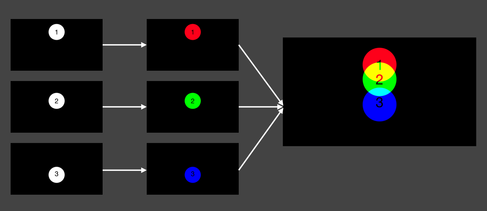

When students think of research, they often imagine state-of-the-art machineries, clean lab coats, and most importantly, amazing discoveries. They're not entirely wrong. For example countless world-altering discoveries have been made at Berkeley. There is an element named after Berkeley for goodness sake. (And 15 additional elements!). But what is often omitted is the day-to-day reality. The course of science is messy. It can be frustrating. It's not always fair. Often overwhelming—dizzying. Sometimes, it's just plain old boring.
Through the composition, editing, and presentation of my images, I attempt to bring life to some of the emotions I've described above. These are not the highlights of research. However, I hope that in this tangled mess of images, you will find little pockets of beauty. That is to say, the ordinary reality of research can be just as exciting, perhaps more so, than the moments of great discovery.
This is not meant to be a commentary on research, but rather a reflection on photography. We often feel the need to reserve photos for the highlights of life. Only the best landscapes, the perfectly framed portraits, and fancy social-media filters can survive the cutting room. In my opinion, while there is value in documenting these highlights, we must not let these fleeting moments prevent us from appreciating our ordinary, mundane, lives.
